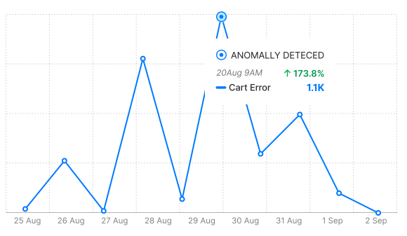
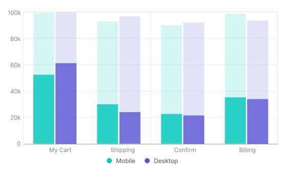
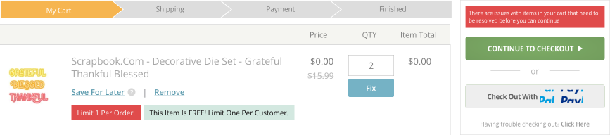
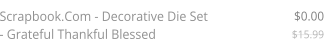

E-Commerce Checkout Redesign
The high-traffic e-commerce platform, catering primarily to women aged 55+, had not undergone a redesign in nearly 20 years. The outdated design failed to meet WCAG AA accessibility guidelines, which were crucial for the core demographic. Additionally, the site was not responsive, and research surfaced the importance of mobile-friendly updates for improving user engagement and accessibility.
We introduced Pay in 4 with PayPal and Apple Pay to streamline the checkout flow, aiming for a faster, more efficient user experience that aligned with modern payment preferences.
Research Insights and Data-Driven Decisions
Throughout the checkout redesign process, I utilized tools like GA4 and Matomo to gather and analyze data on user behavior. The insights helped pinpoint major friction points and areas for improvement, particularly regarding abandonment rates and anomalies detected across the checkout flow.
This prompted a deeper investigation into specific page-level performance, with a focus on understanding why users were abandoning their carts at such high rates during key stages like shipping, billing, and confirmation.
Anomallies Detected
The graph shows a significant spike in cart errors, which are events we track through GA4. However, the error patterns were inconsistent and didn't align with specific events, such as days when we stream live videos or experience high traffic. This raised questions about device and browser compatibility, particularly considering our core demographic of women aged 55+. I also considered the possibility of issues with accessibility, unclear language or instructions, and potential flaws in the user journey. This led me to question whether we were using best practices for accessibility and usability, especially without a formal framework in place.
Abandonment Rate by Page
To further investigate where users were facing challenges, I examined the abandonment rate by page. This bar graph highlights that the most significant drop-offs occurred during the "My Cart" and "Billing" stages of the checkout process, on both mobile and desktop. With this information, I prioritized these two pages for improvements, as they represented the most crucial friction points in the checkout journey. Addressing these could have a major impact on reducing cart abandonment and improving overall conversion rates.
Old Cart Item Product Card Design
Primary CTA Button & Links
These three actions are critical when a cart item contains an error, requiring the user to select one before continuing to the next stage in trhe checkout process.
Product Title and Pricing Text
Product Title and pricing is a key factor in the purchase decision. Poor visibility here could discourage users from completing their purchase.
Product Alert Messages
Product item alert messages are essential for guiding users through critical decisions during the checkout process.